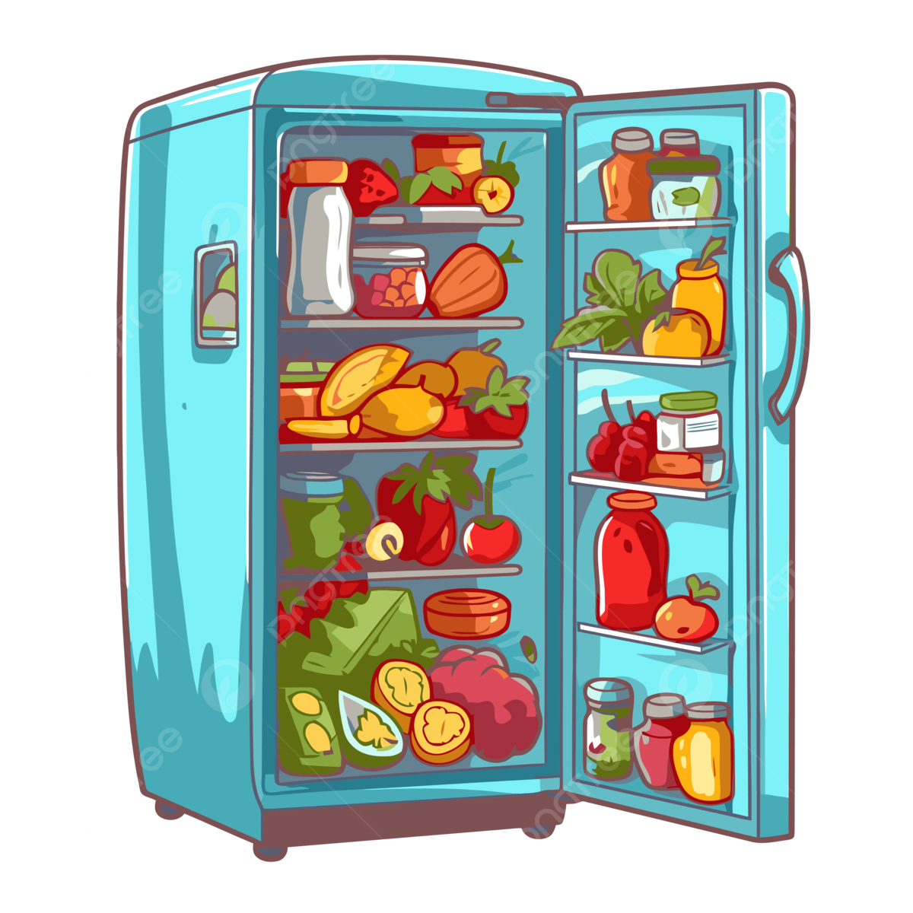
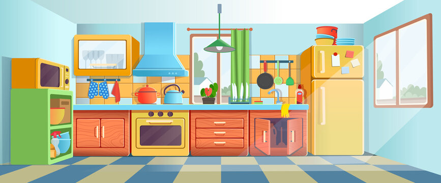

Ever stand in front of your fridge, staring at a bunch of random ingredients, trying to figure out what to make for dinner? Well, what if AI could help with that? I decided to test out an AI-powered recipe generator to see what it could come up with based on the contents of my fridge. I inputted a list of common ingredients—leftover chicken, bell peppers, onions, spinach, and some pantry staples—and let the AI work its magic. Here are some of the dishes it suggested, and how I think they’d turn out:

Recipe 1: Garlic Parmesan Chicken Pasta with Spinach and Bell Peppers
The AI suggested a simple pasta dish, combining the chicken, garlic, spinach, and bell peppers. The recipe looked like it would turn out pretty well—comforting and quick. The garlic and parmesan would add flavor, while the spinach and bell peppers would bring in some freshness. The chicken would add substance, making it a satisfying meal. I imagine it would be a nice go-to for a busy weeknight, though I’d probably want to add a little more seasoning for extra depth of flavor. All in all, pretty solid.
Recipe 2: Chicken and Veggie Stir-Fry
This one’s a classic stir-fry, using chicken, bell peppers, onions, and spinach. Stir-fries are usually quick, and this would probably be a healthy, light meal. The AI’s recipe seemed straightforward, and I’m sure it would taste decent—though I think it could use some additional flavor, like soy sauce or sesame oil, to really bring it to life. While it’s an easy win when you’re low on time, it might feel a bit too basic without some extra kick.
Recipe 3: Chicken Parmesan Stuffed Bell Peppers
I’m always intrigued by stuffed peppers, and this AI-generated recipe would combine the chicken, spinach, tomatoes, and parmesan in a creative way. The chicken and spinach would give it a nice, hearty filling, while the roasted bell peppers would add sweetness. The melted parmesan on top would definitely add comfort. I think this would turn out to be a fun twist on a classic dish—definitely more inventive than the first two. If I were to try it, I’d be curious about how well the peppers cook and whether they get tender enough in the oven.
Recipe 4: Spinach and Chicken Quesadillas
Quesadillas are a quick, satisfying meal, and the AI’s take on them looked pretty good. It would be a crispy, cheesy dish with the chicken and spinach tucked inside. While I love a good quesadilla, I feel like this one might be a little light on flavor without some extra seasoning or a side of salsa. The crispy texture of the tortilla would be nice, but I’d probably want to throw in some other ingredients—like tomatoes, or maybe some spice—just to give it a little more depth. I think this would be decent for a casual meal, though.
Overall, the AI-powered recipe generator did a solid job of suggesting meals based on the ingredients I had available. It gave me a variety of ideas, from classic comfort food like pasta to more creative dishes like stuffed bell peppers. But after thinking about it more, I started to consider the differences between an AI “chef” and a human chef.
AI vs. Human Chef
A human chef’s creativity, experience, and ability to understand the nuances of flavor go far beyond what any AI could currently replicate. When a chef enters the kitchen, they rely on more than just a list of ingredients. They have the ability to sense balance—what flavors need to be adjusted, what textures will complement each other, or even how the dish might be presented to enhance the overall experience. A human chef might intuitively add a splash of lemon juice to brighten up a dish or adjust the seasoning based on how the ingredients come together while cooking. On the other hand, AI lacks this kind of sensory feedback. It doesn’t have taste buds, nor does it have years of experience fine-tuning recipes and techniques. It works by drawing from patterns in the data it’s been trained on—recipes from cookbooks, food blogs, cooking websites, and countless other sources. This means that while AI can come up with perfectly acceptable dishes based on what ingredients are available, it doesn’t understand how those dishes will feel once they’re put together. There’s no personal touch in its cooking, no instinct to elevate a dish by making a tiny change, like adding a pinch of a specific spice at the right moment.
What surprised me
What surprised me most was how well the AI was able to suggest meals using basic ingredients. It didn’t just throw out a random combination, but instead, it took common recipe structures and applied them intelligently to the ingredients I had. For example, the stuffed bell peppers seemed like a creative take, and I honestly didn’t expect the AI to come up with such a thoughtful idea from what I gave it. It showed me that, while AI isn’t going to be a Michelin-starred chef anytime soon, it’s very capable of proposing ideas that work within the limitations of available ingredients. What’s more, I was also surprised by how well the AI captured the idea of creating balanced meals. It recognized that chicken, veggies, and cheese are often used together and suggested combinations that made sense. The dishes, while basic, didn’t seem off-putting or odd, which is impressive given the AI doesn’t actually “taste” the food. It uses its vast database of recipe knowledge to predict what flavors and ingredients tend to complement each other based on data rather than experience.
Where does AI get its knowledge of what tastes good?
AI’s knowledge comes from its massive training on a wide range of data—especially culinary resources like recipe websites, cookbooks, blogs, and reviews. It doesn’t have a direct understanding of taste like a chef does. Instead, it’s more of a data-processing system that identifies patterns. For example, it can learn that chicken and garlic often go together in Mediterranean cuisine or that spinach is frequently paired with cheese in pasta dishes. It’s pulling from what’s worked before, from both common dishes and the success of those dishes based on reviews and feedback, to make predictions about what will taste good. However, without the human element—those sensory moments when a chef adjusts their dish based on what’s in front of them—AI can’t truly “know” what would taste good beyond the parameters of established culinary patterns. The recipes it creates aren’t born from experimentation or the chef’s personal knowledge—they’re the result of statistical analysis of what’s most likely to work.
The AI-powered recipe generator was surprisingly capable of offering up simple, quick meals that were logical and would likely be enjoyable to eat, though they might lack the depth and creativity a human chef could bring to the table.
It can certainly be helpful when you’re in a rush, especially when you’re staring into your fridge and feeling uninspired. But, when it comes to really elevating flavors or taking a meal to the next level, a human chef’s touch, based on expertise and an understanding of how flavors develop, still holds the upper hand.
AI’s ability to come up with functional meal ideas shows that it can be a useful kitchen assistant, especially for beginners or those who need to work with limited ingredients. However, when it comes to the magic of cooking and creating something memorable, that’s where a human chef still shines.
